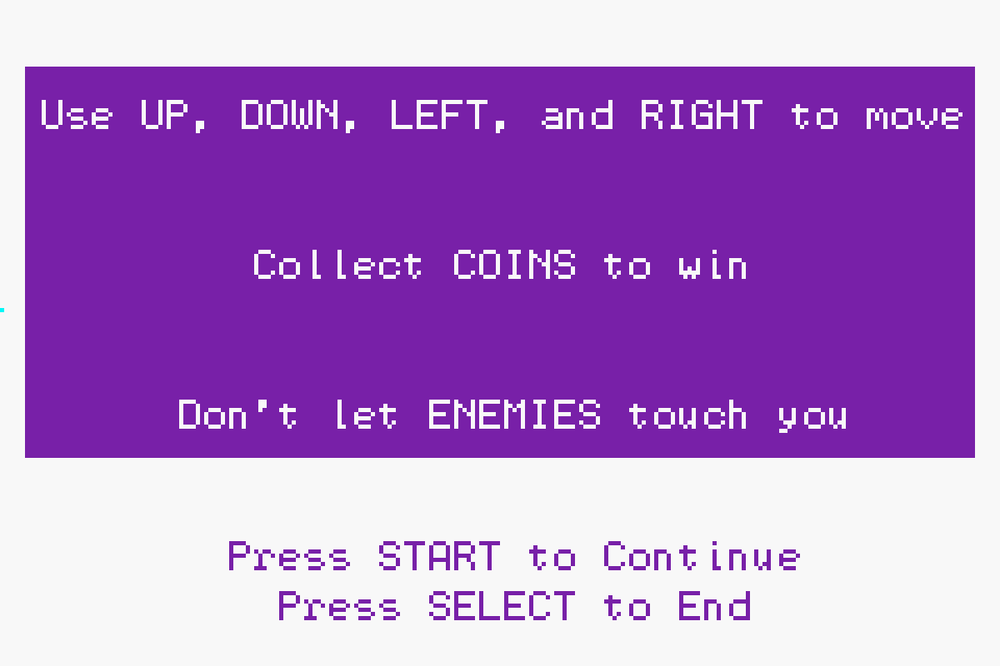

Shruden
Easy to Learn. Hard to Master.
This is one of the three primary principles of game design, and is something that I am sure to hinge my games on when creating them. Shruden is no different. Players grasp the concept and goal of the game quickly, but completing it is far more difficult.
Shruden is one of my favorite projects that I have worked on. I believe it is a well made and addictive game that builds on its hardware limitations and shows my strength as both a video game designer and programmer.

Background
Shruden was a homework assignment for a class titled "Media Device Architecture" and focused on the basic hardware elements of a computer, and how software interacts with that hardware. All of our programming assignments were done in C, and most for the Nintendo Game Boy Advance. Because of this, the programs we created in the class were extremely limited in memory and graphics. I focused on using these limitations to my advantage in the class, as I hinged my game design around various retro-style games.
Design
The design for Shruden, as simple as it may seem, was incredibly well thought out down to the last pixel and exhibits my design philosophy. The game menus are only built off three main colors - purple, white, and light blue, and utilize these colors to create shapes that divide title and instruction from navigation. The game itself has been compared to Pac-man by others; while this was not a conscious effort on my part, I believe the style lends the game to that association.
The characters of the game can be broken down to blocks of color from which the player can derive meaning; for example, the grumpy red Blarp is easily interpreted as an enemy because of his color. The overall aesthetic of Shruden is reminiscent of old arcade games with the large, pixelated text and brightly colored title, which are designed to grab the eye's attention and pull in the player.
As you can see in the accompanying image, much of the game's concept and design was planned out before any programming actually began. The game's structure was written out, and the design for each character was layed out on a grid (where the box to pixel ratio was either 1:1 or 4:1) to ease the process of translating them to code.
Programming
At first glance the graphics might not seem that complicated, but every pixel of Shruden is rendered programatically; rather than having a set of sprites to cycle through to match the different states of the characters, the positions, facial features, and eyes are computed and drawn at every frame. This computation takes into account the direction Blip and Bloop, the blue and pink characters, are moving, as well as Blip's position relative to Blarp, the grumpy red character.
Because of this constant computation for 24 frames a second, the game utilizes double buffering to keep the game smooth and fast. In addition to double buffering, Shruden implements a few other mechanics that improve gameplay. For example, Blarp's direction is always computed relative to Blip's position so that the red grump will move until his exact center is equal to Blip's exact center. Additionally, the green coins are stored via pooling, a concept which is used often in video games to this day. This concept allows video games to access duplicates of certain objects, such as bullets, coins, or Goombas, to be rendered into the game efficiently.